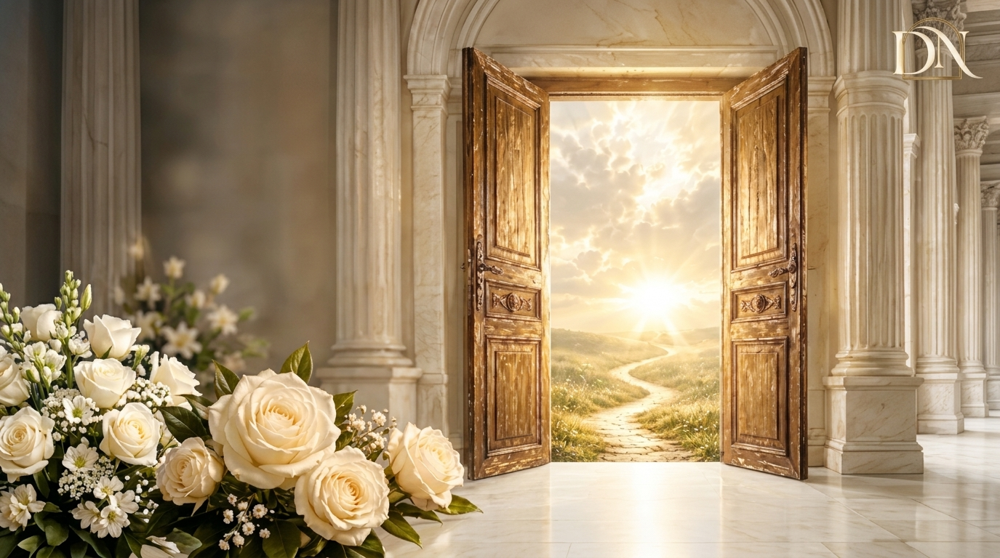
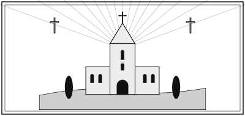
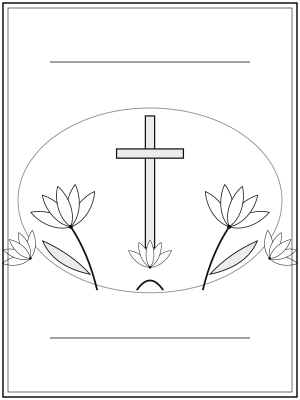
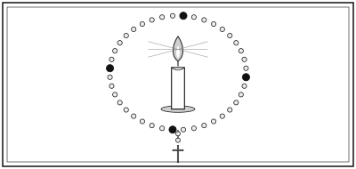

Kompleksowa organizacja
Obsługujemy Wrocław i cały Dolny Śląsk. Przejmujemy formalności i koordynujemy każdy element ceremonii – od pierwszego telefonu do dnia pogrzebu.

Zakład pogrzebowy Wrocław
Jesteśmy przy Państwu przez całą dobę. Zajmiemy się formalnościami i każdym szczegółem ceremonii, aby rodzina mogła być razem z bliskimi.
Pożegnanie bliskiej osoby to wyjątkowo trudny moment. Odciążamy rodzinę od formalności i logistyki, aby mogła skupić się na tym, co najważniejsze.
Obsługujemy Wrocław i cały Dolny Śląsk. Przejmujemy formalności i koordynujemy każdy element ceremonii – od pierwszego telefonu do dnia pogrzebu.
Kameralna przestrzeń we Wrocławiu na spokojne pożegnanie i chwilę skupienia w gronie najbliższych.
Pomagamy w procedurach międzynarodowych: dokumentach, transporcie i kontaktach z urzędami, aby bliski wrócił do domu bez zbędnych trosk.
Wsparcie na każdym etapie – od pierwszego telefonu do dnia pogrzebu.
Odbiór i przewóz o każdej porze, w kraju i za granicę, z poszanowaniem godności zmarłego i spokoju rodziny.
Przygotowanie dokumentów i kontakt z urzędami oraz instytucjami. Zakres pomocy ustalamy z rodziną.
Ceremonia religijna lub świecka, zgodnie z wolą zmarłego i życzeniem rodziny.
Obszar działania: Wrocław oraz całe województwo dolnośląskie. Jeśli cmentarz lub miejscowość nie leży we Wrocławiu, zadzwoń – ustalimy szczegóły.
Spokojnie, krok po kroku. Poniżej typowy przebieg – dostosujemy go do Państwa sytuacji.
Dzwonią Państwo o dowolnej porze. Wyjaśniamy, co zrobić dalej, i umawiamy odbiór zmarłego.
Ustalamy wolę zmarłego, rodzaj ceremonii, miejsce pochówku i termin.
Pomagamy w dokumentach i kontaktach z urzędami, parafią i cmentarzem.
Dbamy o przebieg uroczystości, kwiaty, transport i – jeśli Państwo chcą – stypę.
Pamiętamy o tych, którzy odeszli. Wybierz kartę, aby zobaczyć szczegóły ceremonii.

Z głębokim żalem zawiadamiamy, że odszedł
ur. 14.03.1934 · zm. 03.11.2026
Pogrzeb: 12.11.2026 (czwartek), godz. 12:00
Kościół pw. Świętej Rodziny
Pochówek: Cmentarz Parafialny przy ul. Cichej
„Wieczny odpoczynek racz mu dać, Panie, a światłość wiekuista niechaj mu świeci.”

Z głębokim żalem zawiadamiamy, że odeszła
ur. 02.07.1939 · zm. 05.11.2026
Pogrzeb: 13.11.2026 (piątek), godz. 11:00
Kaplica cmentarna
Pochówek: Cmentarz Komunalny, kwatera 12
„Wieczny odpoczynek racz jej dać, Panie, a światłość wiekuista niechaj jej świeci.”

Z głębokim żalem zawiadamiamy, że odszedł
ur. 21.09.1968 · zm. 07.11.2026
Pogrzeb: 14.11.2026 (sobota), godz. 10:30
Kościół pw. Matki Bożej Różańcowej
Pochówek: Cmentarz Parafialny, kwatera B
„Pan jest moim pasterzem, nie brak mi niczego. (Ps 23)”
Powyższe nekrologi mają charakter demonstracyjny. Rzeczywiste nekrologi publikujemy wyłącznie za zgodą rodziny.
Dla nas najważniejsze jest zaufanie rodzin, którym pomagamy.
W najtrudniejszym momencie ktoś wziął na siebie wszystkie sprawy. Rozmowa była spokojna, a wszystko zostało wyjaśnione krok po kroku.
Pomoc w formalnościach i organizacja ceremonii przebiegły sprawnie. Mogliśmy skupić się na pożegnaniu taty.
Zależało nam na pogrzebie w skromnej oprawie. Wszystko uszanowano, a kontakt był czuły i rzeczowy.
Powyższe opinie mają charakter demonstracyjny i nie pochodzą od prawdziwych klientów. Rzeczywiste opinie publikujemy wyłącznie za zgodą autorów.
Nie ma tu odpowiedzi, której Państwo szukają? Zadzwoń: 886 179 4630.
Zadzwoń pod całodobowy numer 886 179 4630. Powiemy, co zrobić krok po kroku, i zorganizujemy odbiór zmarłego.
Tak, obsługujemy miejscowości i cmentarze w całym województwie dolnośląskim. Szczegóły ustalamy telefonicznie.
Tak, organizujemy ceremonie religijne i świeckie, zgodnie z wolą zmarłego i życzeniem rodziny.
Tak. Pomagamy w dokumentach i kontaktach z urzędami; zakres ustalamy z rodziną.
Telefon odbieramy całą dobę, także w święta.
 Dawid Nowak – Usługi Pogrzebowe
Dawid Nowak – Usługi Pogrzebowe Dawid Nowak – Usługi Pogrzebowe
Dawid Nowak – Usługi Pogrzebowe